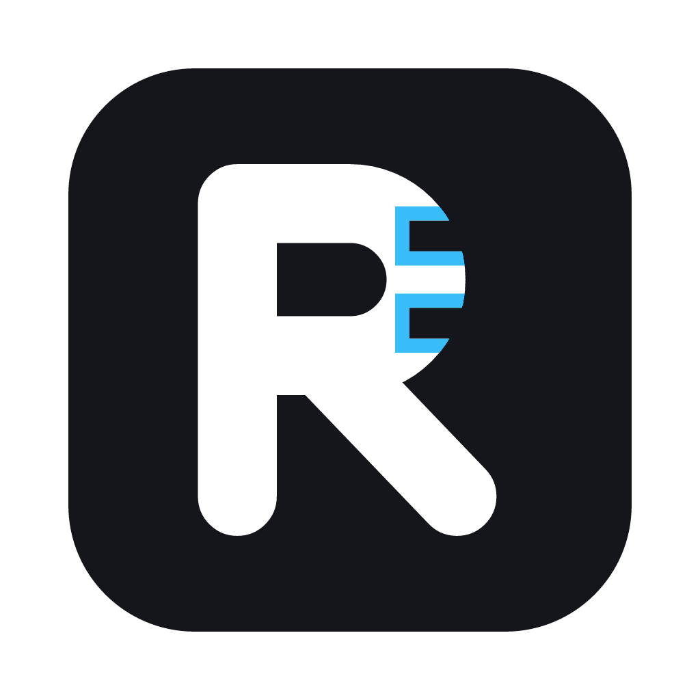

Rabby
A live conversation copilot for Mac and Windows that stays hidden from screen sharing.
Install
Mac
- Open the downloaded DMG and drag Rabby to Applications.
- Open the app. A short walkthrough sets up the AI model, permissions and your first session.
- When asked, allow Screen Recording and Microphone. After allowing Screen Recording, quit and reopen the app.
The Mac app is signed and notarized by Apple.
Windows
- Run the downloaded setup file. It installs for your user account only, so no administrator rights are needed.
- If Windows shows "Windows protected your PC", click More info, then Run anyway. This appears because the installer isn't code-signed yet.
- The app opens with a short walkthrough. It doesn't appear in the taskbar; use its icon in the system tray (near the clock) to show it, open Settings or quit.
Both versions update themselves when new versions are released.
What it does
- Hidden from Zoom, Meet and Teams screen shares, recordings and screenshots.
- Sessions for interviews, meetings, client calls, presentations and casual chats, each with its own context (for interviews: your resume and the job description).
- Answers as bullet points, paragraphs, or in your own format.
- Reads screenshots of coding problems and live-transcribes the other side of the call.
- Turns the transcript into a PDF summary: a question-by-question interview report with scores and feedback, or a meeting recap with next steps.
- Mock interviews: practise out loud with an AI interviewer that asks questions from your job description and resume, in a natural voice, then get a report with scores, stronger sample answers and feedback on your delivery.
- Runs privately and for free on your computer with LM Studio; cloud models are optional. The walkthrough suggests models that fit your computer's memory.
Use responsibly: many employers and test providers don't allow undisclosed AI assistance in interviews or assessments.